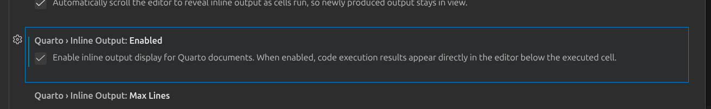

Positron
Workspace vs User Settings
Workspace settings can be tracked in GitHub in the .vscode folder. User settings are not.
We can filter for Modified settings (
@modified) to see what settings have been changed.Settings can be scoped to a language
- e.g.
"[quarto]": {...}
- e.g.
The Preview button next to run all in Positron has “Preview Format…”, which allows previewing in different formats.

Code Cells
“Names with spaces are holes in your soul”
Use code cell names to get errors for different sections.
Searching with @ the code sell will show up
YAML
YAML can be changed in the front matter, _quarto.yml, and the cell file
Snippets
Insert snippets for boilerplate code
Brand
Five keys:
meta- Who the brand belongs to, names, linkslogo- Image file(s)color
Meta
- For humans only
Logo
Path to resolve relative to brand file
Give alt text
Color
Works in two steps:
- Name your colors in
pallete - Then say what role each one plays
primary: forestNOTprimary: "#1b5e4f"
- Name your colors in
color:
palette:
forest: "#1b5e4f"
primary: forestPartials
Partials don’t (or don’t really) work within the body whereas params do
Uses Pandoc syntax
Using a dot for nested -
$brs-release.periodis the period object withinbrs-release
Example 2
For example 2, we need to add in the the <bns-release.*> - This is a custom value, so it doesn’t collide with quarto’s meta data. - For example, having masthead so it doesn’t collide with quarto’s logo
Example 3
For adding status, make sure that we have the $brs-release.status$ when adding status
Typst
?meta:brs-release.status
- This is a quarto short cut that says “hey look at the meta data and find this information”
format in yaml uses the first default
Quarto headings are offset by 1-level. So a level 3 heading in quarto is actually a level 2 heading in typst.
write_yaml can be used for paramatizing - quarto::write_yaml
check out lua filters